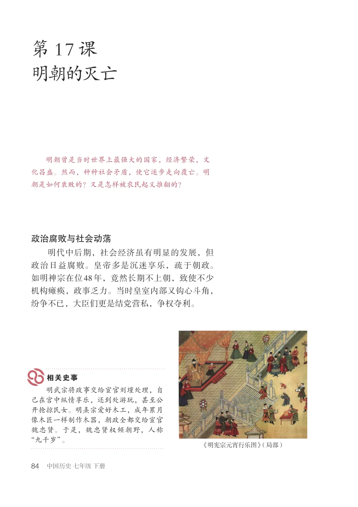
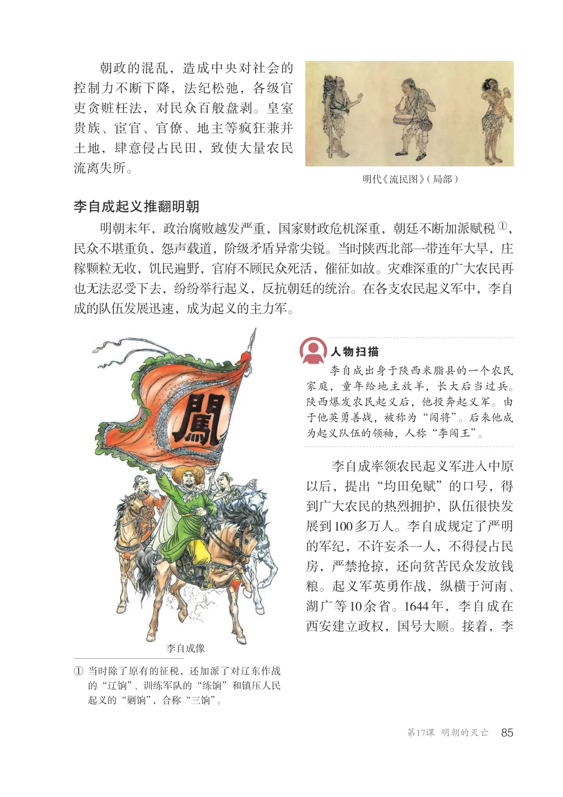
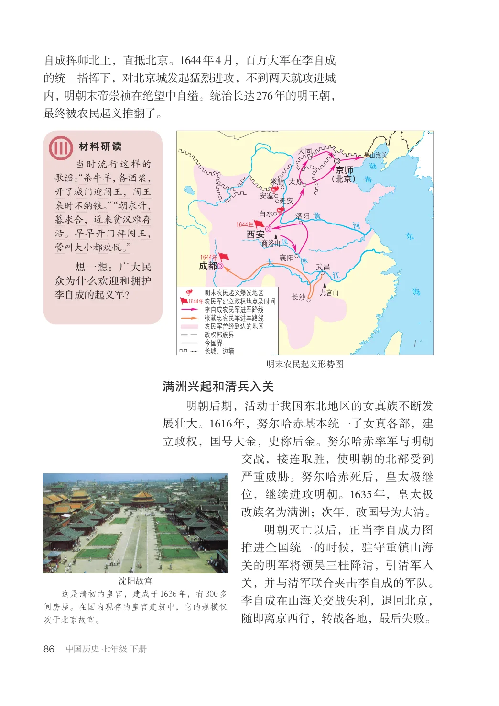
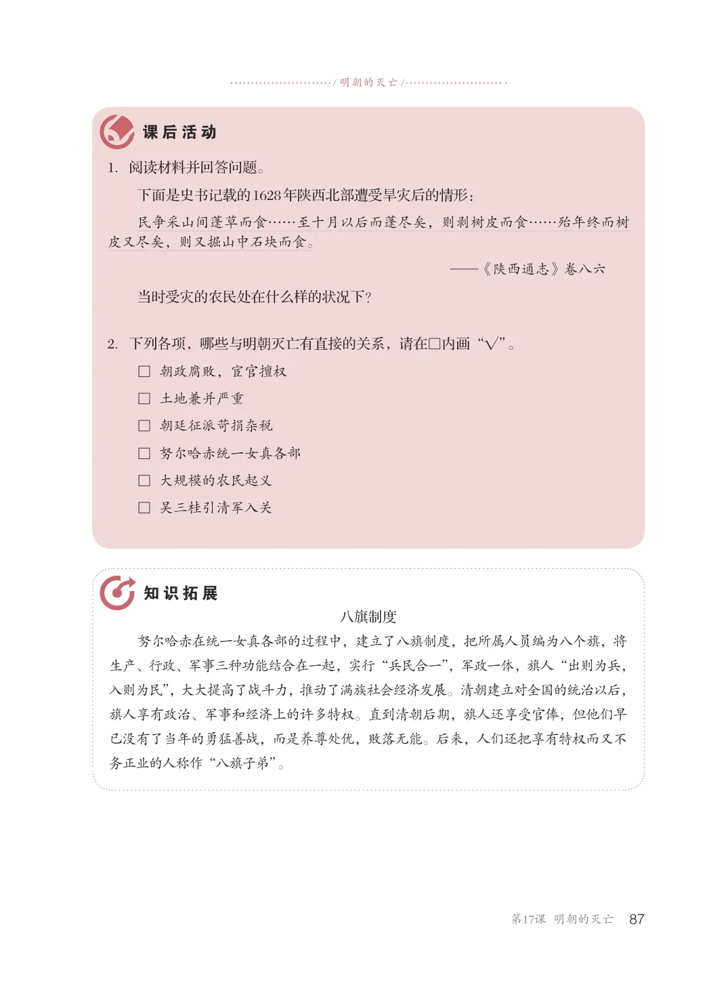

第3单元 · 教材第 84–87 页
第17课 明朝的灭亡
文字版依据教材 PDF 文本层整理；复杂地图、图表及版面关系请以右侧教材原页为准。
明朝曾是当时世界上最强大的国家，经济繁荣，文化昌盛。然而，种种社会矛盾，使它逐步走向覆亡。明朝是如何衰败的？又是怎样被农民起义推翻的？
政治腐败与社会动荡
明代中后期，社会经济虽有明显的发展，但政治日益腐败。皇帝多是沉迷享乐，疏于朝政。如明神宗在位48年，竟然长期不上朝，致使不少机构瘫痪，政事乏力。当时皇室内部又钩心斗角，纷争不已，大臣们更是结党营私，争权夺利。
明武宗将政事交给宦官刘瑾处理，自己在宫中纵情享乐，还到处游玩，甚至公开抢掠民女。明熹宗爱好木工，成年累月像木匠一样制作木器，朝政全都交给宦官魏忠贤。于是，魏忠贤权倾朝野，人称“九千岁”。
《明宪宗元宵行乐图》（局部）

朝政的混乱，造成中央对社会的控制力不断下降，法纪松弛，各级官吏贪赃枉法，对民众百般盘剥。皇室贵族、宦官、官僚、地主等疯狂兼并土地，肆意侵占民田，致使大量农民流离失所。
明代《流民图》（局部）
李自成起义推翻明朝
明朝末年，政治腐败越发严重，国家财政危机深重，朝廷不断加派赋税①，民众不堪重负，怨声载道，阶级矛盾异常尖锐。当时陕西北部一带连年大旱，庄稼颗粒无收，饥民遍野，官府不顾民众死活，催征如故。灾难深重的广大农民再也无法忍受下去，纷纷举行起义，反抗朝廷的统治。在各支农民起义军中，李自成的队伍发展迅速，成为起义的主力军。
李自成出身于陕西米脂县的一个农民家庭，童年给地主放羊，长大后当过兵。陕西爆发农民起义后，他投奔起义军。由于他英勇善战，被称为“闯将”。后来他成为起义队伍的领袖，人称“李闯王”。
李自成率领农民起义军进入中原以后，提出“均田免赋”的口号，得到广大农民的热烈拥护，队伍很快发展到100多万人。李自成规定了严明的军纪，不许妄杀一人，不得侵占民房，严禁抢掠，还向贫苦民众发放钱粮。起义军英勇作战，纵横于河南、湖广等10余省。1644年，李自成在西安建立政权，国号大顺。接着，李
李自成像
①当时除了原有的征税，还加派了对辽东作战
的“辽饷”、训练军队的“练饷”和镇压人民起义的“剿饷”，合称“三饷”。

自成挥师北上，直抵北京。1644年4月，百万大军在李自成的统一指挥下，对北京城发起猛烈进攻，不到两天就攻进城内，明朝末帝崇祯在绝望中自缢。统治长达276年的明王朝，最终被农民起义推翻了。
当时流行这样的歌谣：“杀牛羊，备酒浆，开了城门迎闯王，闯王来时不纳粮。”“朝求升，暮求合，近来贫汉难存活。早早开门拜闯王，管叫大小都欢悦。”想一想：广大民众为什么欢迎和拥护李自成的起义军？
京师（北京）米脂
1644年
西安
1644年
武昌成都
明末农民起义爆发地区农民军建立政权地点及时间李自成农民军进军路线张献忠农民军进军路线农民军曾经到达的地区政权部族界今国界
1644年
长城、边墙
明末农民起义形势图
满洲兴起和清兵入关
明朝后期，活动于我国东北地区的女真族不断发展壮大。1616年，努尔哈赤基本统一了女真各部，建立政权，国号大金，史称后金。努尔哈赤率军与明朝交战，接连取胜，使明朝的北部受到严重威胁。努尔哈赤死后，皇太极继位，继续进攻明朝。1635年，皇太极改族名为满洲；次年，改国号为大清。
明朝灭亡以后，正当李自成力图推进全国统一的时候，驻守重镇山海关的明军将领吴三桂降清，引清军入关，并与清军联合夹击李自成的军队。李自成在山海关交战失利，退回北京，随即离京西行，转战各地，最后失败。
沈阳故宫这是清初的皇宫，建成于1636年，有300多间房屋。在国内现存的皇宫建筑中，它的规模仅次于北京故宫。

/ 明朝的灭亡/
1．阅读材料并回答问题。
下面是史书记载的1628年陕西北部遭受旱灾后的情形：民争采山间蓬草而食……至十月以后而蓬尽矣，则剥树皮而食……殆年终而树皮又尽矣，则又掘山中石块而食。
—《陕西通志》卷八六
当时受灾的农民处在什么样的状况下？
2．下列各项，哪些与明朝灭亡有直接的关系，请在□内画“√”。
□ 朝政腐败，宦官擅权□ 土地兼并严重□ 朝廷征派苛捐杂税□ 努尔哈赤统一女真各部□ 大规模的农民起义□ 吴三桂引清军入关
八旗制度努尔哈赤在统一女真各部的过程中，建立了八旗制度，把所属人员编为八个旗，将生产、行政、军事三种功能结合在一起，实行“兵民合一”，军政一体，旗人“出则为兵，入则为民”，大大提高了战斗力，推动了满族社会经济发展。清朝建立对全国的统治以后，旗人享有政治、军事和经济上的许多特权。直到清朝后期，旗人还享受官俸，但他们早已没有了当年的勇猛善战，而是养尊处优，败落无能。后来，人们还把享有特权而又不务正业的人称作“八旗子弟”。
